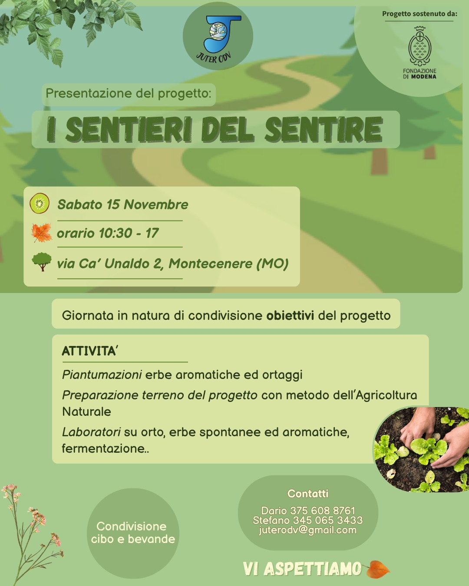

Rimani aggiornato sulle nostre ultime attività
Scopri gli eventi in programma e le novità dai nostri progetti.
Siamo felici di annunciare il prossimo evento legato al progetto "Sentieri del sentile". Vi aspettiamo numerosi! 🎉
Un progetto gratuito per bambini dai 7 ai 14 anni, pensato per favorire il riavvicinamento alla natura e alle proprie emozioni attraverso la creazione di un orto e di un giardino sensoriale, guidati da professionisti esperti.
Ti invitiamo alla giornata di presentazione del progetto “I Sentieri del Sentire”, un percorso gratuito dedicato a bambini dai 7 ai 14 anni e alle loro famiglie.
Durante l’incontro racconteremo gli obiettivi e le attività del progetto, che partirà ufficialmente in primavera 🌸. In questa fase iniziamo a raccogliere le adesioni e a costruire insieme la comunità 🤝 che accompagnerà i bambini in un’esperienza unica tra natura, emozioni e creatività 🎨.
La giornata sarà anche un’occasione per mettere le mani nella terra 👐 e dare simbolicamente inizio ai lavori per la realizzazione di un giardino sensoriale e di un piccolo orto didattico, spazi dove i partecipanti potranno sperimentare, osservare e crescere attraverso il contatto diretto con la natura.
Non mancheranno workshop interattivi, momenti di condivisione con cibo e bevande 🥪, e tante opportunità per conoscere da vicino il progetto e le sue potenzialità.
Ti aspettiamo per intraprendere insieme questo nuovo sentiero di scoperta e crescita! 😊 Il progetto è gratuito e aperto alla partecipazione delle famiglie: un’occasione per crescere insieme, in armonia con la natura.